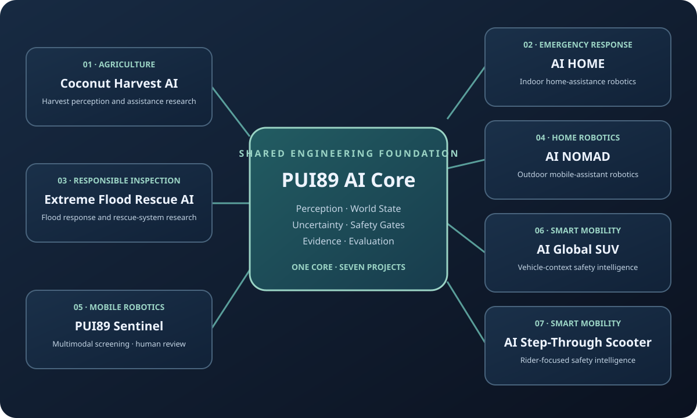
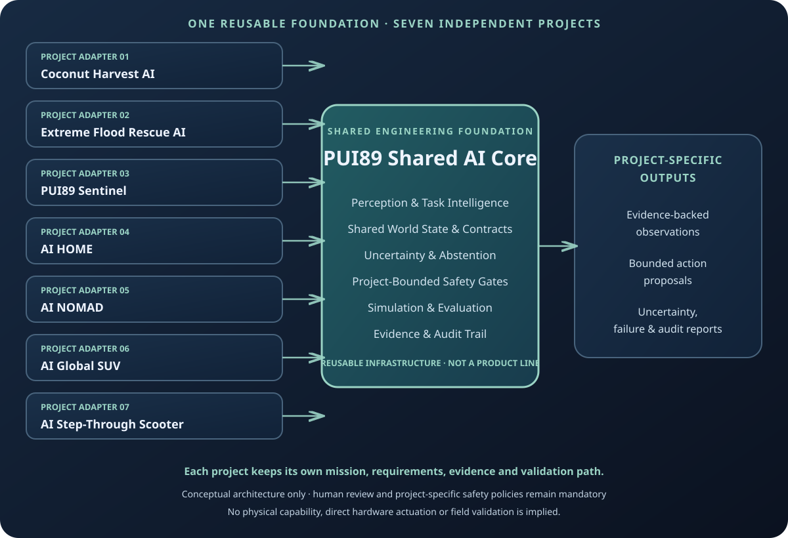
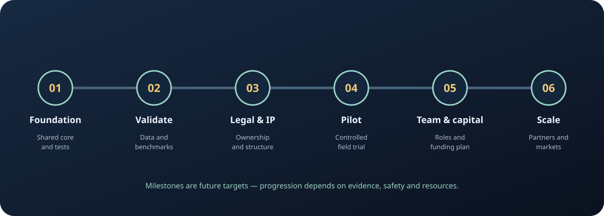

01 · Coconut Harvest AI
Agricultural perception and harvesting-assistance research, with worker and animal safety.
Project overview ↗Build a trusted technology initiative first. Validate a product. Then incorporate, commercialise and scale responsibly.

PUI89 develops seven independent AI and robotics project lines. Each project has its own mission, requirements, evidence and validation path. The PUI89 Shared AI Core provides reusable engineering infrastructure across all seven; it is not an eighth project or a replacement for any project.

Each project has its own problem definition, requirements, evidence and validation gates. The Shared AI Core is reusable infrastructure supporting all seven; it does not replace or rank the projects.
Agricultural perception and harvesting-assistance research, with worker and animal safety.
Project overview ↗Flood-response and rescue-system research for people, animals and essential supplies.
Project overview ↗Multimodal screening decision support with provenance, uncertainty and human review.
Project overview ↗Indoor home-safety monitoring and evidence-led assistance.
Project overview ↗Mobile assistant robotics as a separate project with its own constraints and validation.
Project overview ↗Vehicle-context perception, safety monitoring and simulation-first autonomy research.
Project overview ↗Two-wheel mobility safety intelligence, rider alerts and simulation-first evaluation.
Project overview ↗Shared foundation: PUI89 Shared AI Core ↗ — common contracts, safety gates, evidence handling and reusable evaluation interfaces.

Consolidate shared interfaces, automated tests, provenance, safety gates, documentation and public status reporting. Establish official brand channels and protect accounts.
Exit evidence:Reproducible CI, documented architecture, security baseline and transparent project status.
Define a testable use case and validation plan for each of the seven projects. Prioritise by evidence readiness, safety, available lawful data, user need and resource limits—not by treating any project as a permanent flagship.
Exit evidence:Separate, reproducible evaluation records for each project, with datasets, limitations, user feedback and resource requirements disclosed.
Review brand availability, ownership of code and data, third-party licences, founder roles, company structure, tax and accounting needs with qualified Thai professionals.
Exit evidence:Clear ownership records, incorporation decision and documented commercial terms.
Run a controlled pilot with an appropriate partner. Define success criteria before testing, measure resource use and reliability, and obtain permission for any published case study.
Exit evidence:Partner-approved pilot report, customer value evidence and a credible pricing model.
Recruit or partner for missing engineering, product, sales, legal and finance capabilities. Consider grants or investment only with a validated use of funds and clear ownership.
Exit evidence:Defined roles, financial plan, product roadmap and verified traction.
Expand through research and commercial partnerships, localisation, product support and relevant quality, safety, privacy and cybersecurity practices.
Exit evidence:Repeatable deployments, support capability and revenue across more than one market.
These are hypotheses, not existing revenue streams or customer commitments.